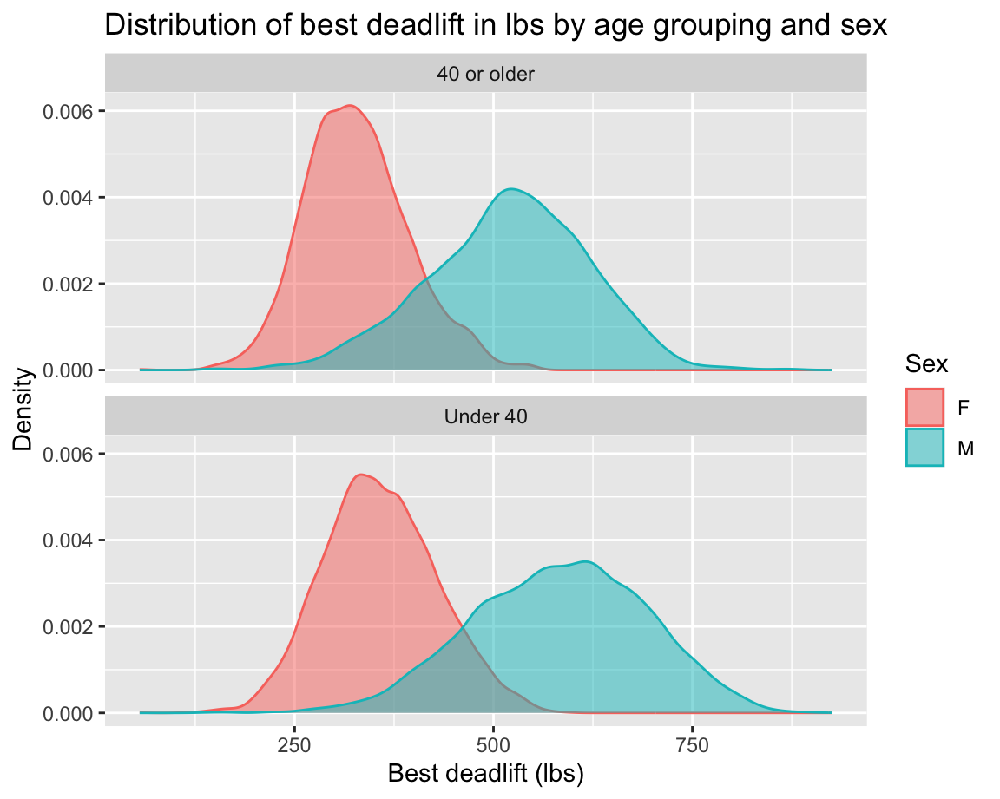

Lab 6
Visualize, model, interpret again
Introduction
In this lab you’ll start your practice of statistical modeling. You’ll fit models, interpret model output, and make decisions about your data and research question based on the model results. And you’ll wrap up the lab revisiting the topic of data science ethics.
This lab assumes you’ve completed the labs so far and doesn’t repeat setup and overview content from those labs. If you haven’t done those yet, you should review the previous labs before starting on this one.
Learning objectives
By the end of the lab, you will…
- Fit, interpret, and make predictions with models with multiple predictors.
- Perform model selection.
And, as usual, you will also…
- Get more experience with data science workflow using R, RStudio, Git, and GitHub
- Further your reproducible authoring skills with Quarto
- Improve your familiarity with version control using Git and GitHub
Getting started
Log in to RStudio, clone your lab-6 repo from GitHub, open your lab-6.qmd document, and get started!
Step 1: Log in to RStudio
- Go to https://cmgr.oit.duke.edu/containers and log in with your Duke NetID and Password.
- Click
STA198-199under My reservations to log into your container. You should now see the RStudio environment.
Step 2: Clone the repo & start a new RStudio project
Go to the course organization at github.com/sta199-f24 organization on GitHub. Click on the repo with the prefix lab-6. It contains the starter documents you need to complete the lab.
Click on the green CODE button and select Use SSH. This might already be selected by default; if it is, you’ll see the text Clone with SSH. Click on the clipboard icon to copy the repo URL.
In RStudio, go to File ➛ New Project ➛Version Control ➛ Git.
Copy and paste the URL of your assignment repo into the dialog box Repository URL. Again, please make sure to have SSH highlighted under Clone when you copy the address.
Click Create Project, and the files from your GitHub repo will be displayed in the Files pane in RStudio.
Click lab-6.qmd to open the template Quarto file. This is where you will write up your code and narrative for the lab.
Step 3: Update the YAML
In lab-6.qmd, update the author field to your name, render your document and examine the changes. Then, in the Git pane, click on Diff to view your changes, add a commit message (e.g., “Added author name”), and click Commit. Then, push the changes to your GitHub repository, and in your browser confirm that these changes have indeed propagated to your repository.
If you run into any issues with the first steps outlined above, flag a TA for help before proceeding.
Packages
In this lab, we will work with the
- tidyverse package for doing data analysis in a “tidy” way,
- tidymodels package for modeling in a “tidy” way, and
- openintro package for the dataset for Part 1.
-
Run the code cell by clicking on the green triangle (play) button for the code cell labeled
load-packages. This loads the package so that its features (the functions and datasets in it) are accessible from your Console. - Then, render the document that loads this package to make its features (the functions and datasets in it) available for other code cells in your Quarto document.
Guidelines
As we’ve discussed in lecture, your plots should include an informative title, axes and legends should have human-readable labels, and careful consideration should be given to aesthetic choices.
Additionally, code should follow the tidyverse style. Particularly,
there should be spaces before and line breaks after each
+when building aggplot,there should also be spaces before and line breaks after each
|>in a data transformation pipeline,code should be properly indented,
there should be spaces around
=signs and spaces after commas.
Furthermore, all code should be visible in the PDF output, i.e., should not run off the page on the PDF. Long lines that run off the page should be split across multiple lines with line breaks.
Continuing to develop a sound workflow for reproducible data analysis is important as you complete the lab and other assignments in this course. There will be periodic reminders in this assignment to remind you to render, commit, and push your changes to GitHub. You should have at least 3 commits with meaningful commit messages by the end of the assignment.
You are also expected to pay attention to code smell in addition to code style and readability. You should review and improve your code to avoid redundant steps (e.g., grouping, ungrouping, and grouping again by the same variable in a pipeline), using inconsistent syntax (e.g., ! to say “not” in one place and - in another place), etc.
Part 1 - Life expectancy and GDP
Gapminder is a “fact tank” that uses publicly available world data to produce data visualizations and teaching resources on global development. We will use an excerpt of their data to explore relationships among world health metrics across countries and regions between the years 2000 and 2023. The data set is called gapminder and it’s in your lab repository’s data folder. A table of variables can be found below.
country: The country namecontinent: The continent nameyear: Year of datalife_exp: life expectancy at birth, in yearsgdp_percap: Gross domestic product per person adjusted for differences in purchasing power (in international dollars, fixed 2017 prices)
Question 1
In this question you’ll prepare the dataset you’ll use in this part.
Read: Read the data and save it as an object called
gapminder_raw.Filter: For our analysis, we will only be working with data from 2023. Filter the data set so only values from the year 2023 are included. Save this data set as
gapminder_raw_23and use it for the remainder of this exercise and the following.Glimpse: Glimpse at
gapminder_raw_23and list the variables and their types. Comment on any unexpected features in the data.Clean: First, figure out why
gdp_percapis read in as a character variable and describe your findings in one sentence. Then, clean thegdp_percapvariable and convert it to numeric values. Save the resulting data frame asgapminder_23.
Question 2
We are interested in learning more about life expectancy in countries, and we’ll start by exploring the relationship between life expectancy and GDP. Create two visualizations:
Scatter plot of
life_expvs.gdp_percapScatter plot of
life_exp_logvs.gdp_percap, wherelife_exp_logis a new variable you add to the data set by taking the natural log oflife_exp.
First describe the relationship between each pair of the variables. Then, comment on which relationship would be better modeled using a linear model, and explain your reasoning.
The question isn’t asking which of these relationships is clearly linear, but instead which would be better modeled using a linear model.
Question 3
** Data Prep ** What happens when you take the natural log of 0? Remove rows of your data set where life_expectancy = 0, justifying why this is helpful.
Model fitting: Fit a linear model predicting log life expectancy from gross domestic product. Display the tidy summary.
-
Model evaluation:
Calculate the R-squared of the model using two methods and confirm that the values match: first method is using
glance()and the other method is based on the value of the correlation coefficient between the two variables.Interpret R-squared in the context of the data and the research question.
Question 4
Next, we want to examine if the relationship between life expectancy and GDP that we observed in the previous exercise holds across all continents in our data. We’ll continue to work with logged life expectancy (life_exp_log) and data from 2023.
Justification: Create a scatter plot of
life_exp_logvs.gdp_percap, where the points are colored bycontinent. Do you think the trend betweenlife_exp_logandgdp_percapis different for different continents? Justify your answer with specific features of the plot.-
Model fitting and interpretation:
Regardless of your answer in part (a), fit an additive model (main effects) that predicts
life_exp_logfrom GDP per capita and continent (with Africas as the baseline level). Display a tidy summary of the model output.Interpret the intercept of the model, making sure that your interpretation is in the units of the original data (not on log scale).
Interpret the slope of the model, making sure that your interpretation is in the units of the original data (not on log scale).
Prediction: Predict the life expectacy of a country in Asia where the average GDP per capita is $70,000. Do this using R functions, not by manually plugging in numbers.
Question 5
Communication is a critical yet often overlooked part of data science. When we engage with our audience and capture their interest, we can ultimately better communicate what we are trying to share.
Please watch the following video: Hans Rosling: 200 years in 4 minutes.
Then, write a paragraph (4-5 sentences) addressing the following:
What did you enjoy about the presentation of data? What did you find interesting
Were there any aspects of the presentation that were hard to follow? If so, what?
What are your general take-aways from this presentation?
What are your general take-aways from how this presentation was given?
Part 2 - Bike rentals
Bike sharing systems are new generation of traditional bike rentals where whole process from membership, rental and return back has become automatic. You are tasked to investigate the relationship between the temperature outside and the number of bikes rented in the Washington DC area between the years 2011 and 2022. You will be investigating data for the months June, July, September, and November.1
The dataset is called bike.csv and it’s in your lab repository’s data folder.
Below is a list of variables and their definitions:
| Variable | Definition |
|---|---|
season |
Numerical representation of Spring (2), Summer (3), and Fall (4) |
year |
Numerical representation of 2011 (0) or 2012 (1) |
month |
Month in which data were collected |
holiday |
Indicator variable for whether data were collected on a holiday (1) or not (0) |
weekday |
Numerical representation of day of week |
temp |
Temperature in Celsius |
count |
Number of bike rentals for that day |
Question 6
Read in the data. Then, create a scatter plot that investigates the relationship between the number of bikes rented and the temperature outside. Include a straight line of best fit to help discuss the discovered relationship. Summarize your findings in at most 4 sentences.
Another researcher suggests to look at the relationship between bikes rented and temperature by each of the four months of interest. Recreate your plot in part a, and color the points by month. Include a straight line for each of the four months to help discuss each month’s relationship between bikes rented and temperature. Summarize your findings in at most 4 sentences.
Watch the following video on Simpson’s Paradox here. After you do, please answer the following questions.
In your own words, summarize Simpson’s Paradox in at most 4 sentences.
Compare and contrast your findings from part (a) and part (b). What’s different?
Think critically about your answer to part d. What other context from this study could be creating this paradox? That is, identify a potential confounding variable in this study. Be sure to justify how your example could be a potential confounding variable by relating it back to both bike rentals and temperature.
Part 3 - Do you even lift?
In this part, you will be working with data from www.openpowerlifting.org. This data was sourced from Tidy Tuesday and contains international powerlifting records at various meets. At each meet, each lifter gets three attempts at lifting max weight on three lifts: the bench press, squat and deadlift.
ipf <- read_csv("data/ipf.csv")The data dictionary for this dataset from TidyTuesday is reproduced below:
| variable | description |
|---|---|
name |
Individual lifter name |
sex |
Binary gender (M/F) |
event |
The type of competition that the lifter entered. Values are as follows:
|
equipment |
The equipment category under which the lifts were performed. Values are as follows:
|
age |
The age of the lifter on the start date of the meet, if known. |
age_class |
The age class in which the filter falls, for example 40-45
|
division |
Free-form UTF-8 text describing the division of competition, like Open or Juniors 20-23 or Professional. |
bodyweight_kg |
The recorded bodyweight of the lifter at the time of competition, to two decimal places. |
weight_class_kg |
The weight class in which the lifter competed, to two decimal places. Weight classes can be specified as a maximum or as a minimum. Maximums are specified by just the number, for example |
best3squat_kg |
Maximum of the first three successful attempts for the lift. Rarely may be negative: that is used by some federations to report the lowest weight the lifter attempted and failed. |
best3bench_kg |
Maximum of the first three successful attempts for the lift. Rarely may be negative: that is used by some federations to report the lowest weight the lifter attempted and failed. |
best3deadlift_kg |
Maximum of the first three successful attempts for the lift. Rarely may be negative: that is used by some federations to report the lowest weight the lifter attempted and failed. |
place |
The recorded place of the lifter in the given division at the end of the meet. Values are as follows:
|
date |
ISO 8601 Date of the event |
federation |
The federation that hosted the meet. (limited to IPF for this data subset) |
meet_name |
The name of the meet. The name is defined to never include the year or the federation. For example, the meet officially called 2019 USAPL Raw National Championships would have the MeetName Raw National Championshps. |
For all of the following exercises, you should include units on axes labels, e.g. “Bench press (lbs)” or “Bench press (kg)”. “Age (years)” etc. This is good practice.
Question 7
a. Let’s begin by taking a look at the squat lifting records.
- Start with the
ipfdata frame. - First, remove any observations that are negative for squat.
- Next, create a new column called
best3_squat_lbsthat converts the record from kilograms to pounds.
You may need to google the conversion formula. Save your data frame as ipf_squat. Report the number of rows and columns of this new data frame using inline code.
b. Using the ipf_squat data frame you created in part (a), create a scatter plot to investigate the relationship between squat (in lbs) and age. Age should be on the x-axis. Adjust the alpha level of your points to get a better sense of the density of the data. Add a linear trend-line. Summarize the trend you observe in at most 4 sentences.
c. Write down the linear population model to predict lift squat lbs from age. Next, fit the linear model, and save it as age_fit. Re-write your previous equation replacing the population parameters with the numeric estimates. This is called the “fitted” linear model. Interpret each estimate of \(\beta\). Are the interpretations sensible?
Question 8
a. Building on your ipf_squat data frame from the previous question, create a new column called age2 that takes the age of each lifter and squares it. Save it to your data frame ipf_squat. Next, plot squat in lbs vs age2 and add a linear best fit line. How does the fit of the model compare to the one from earlier?
To raise a value to a power, use ^ in R, e.g.: 2 ^ 2 gives you 4, 2 ^ 3 gives you 8, etc.
b. One metric to assess the fit of a model is the correlation squared, also known as \(R^2\). Fit the age\(^2\) model and save the object as age2_fit. Compare \(R^2\) of the new model (squat vs. age\(^2\)) to the \(R^2\) of the earlier model (squat vs. age). Which has a higher \(R^2\)?
Question 9
Start over with the ipf data frame.
Next, let’s turn our attention to dead lifting records. Recreate the plot below. Make sure axes and title labels are exactly matching, including spelling, capitalization, etc. Based on the plot below, which impacts deadlift weight more, age category or sex?

You will need to create a couple of new columns. One to classify age appropriately and one to convert best3deadlift_kg to the plotted units (lbs). Notice that there are no negative deadlift values on the x-axis.
Question 10
a. Start over with the ipf data frame.
Finally, let’s turn our attention to bench press records.
To begin, remove any observations that are negative for bench press, create two new columns: best3bench_lbs and bodyweight_lbs. Save the result in a new data frame called ipf_bench.
Then, create a scatter plot to investigate the relationship between best bench press (in lbs) and the lifter’s bodyweight (in lbs). Bodyweight should be on the x-axis. Add a linear trend-line. Be sure to label all axes and give the plot a title. Comment on what you observe.
b. Fit the linear model displayed in part (a) and write down the fitted model equation only, replacing \(\hat{\beta}\)s with their fitted estimates. Interpret the \(\hat{\beta}\)s (intercept and slope). Report \(R^2\). Is body weight an important predictor of bench press ability? Why or why not?
Footnotes
Data subset from Progress in Artificial Intelligence, 2013.↩︎